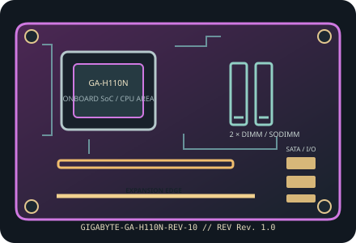

[ INDIVIDUAL COMPONENT // MOTHERBOARDS ]
GIGABYTE GA-H110N (Rev. 1.0)
Socketed Intel desktop Mini-ITX board using the H110 chipset. This entry identifies GA-H110N Rev. 1.0; CPU support depends on the installed processor and BIOS release.

IDENTIFICATION: Confirm the complete model suffix and PCB revision printed on the board. Select firmware and parts from the documentation for this exact revision; a matching socket or product family alone does not establish compatibility.
Specifications
| Exact model / PCB revision | GIGABYTE GA-H110N (Rev. 1.0) |
|---|---|
| Processor / socket | LGA1151 socket for supported 6th-generation Intel Core, Pentium and Celeron desktop processors; selected 7th-generation CPUs require a supporting BIOS. Consult GIGABYTE’s exact CPU support table. |
| Chipset | Intel H110 Express. |
| Form factor | Mini-ITX, 170 × 170 mm. |
| Memory and slots | Two DDR4 desktop UDIMM slots, dual-channel, up to 32 GB; non-ECC unbuffered memory is standard. Supported memory speed depends on CPU/chipset (DDR4-2133/2400 generation limits); consult the manual and QVL. |
| Expansion | One PCIe 3.0 x16-length graphics slot and an M.2 Socket 1 E-key connector for wireless modules. |
| Storage | Three SATA 6 Gb/s connectors plus rear-side M.2 Socket 3 for supported SATA or PCIe SSD form factors (verify key, length and lane mode in the revision-matched manual). |
| Network and onboard I/O | Realtek Gigabit Ethernet; onboard graphics outputs are CPU-dependent and include the board’s digital/display connectors; onboard HD audio. |
| Power connections | 24-pin ATX motherboard power and ATX12V CPU power connector; check exact connector pin count and supply requirements in the GA-H110N Rev. 1.0 manual. |
| BIOS / firmware | GIGABYTE UEFI DualBIOS. The board’s 6th/7th-generation CPU compatibility is BIOS-version dependent; confirm exact CPU support and minimum BIOS before purchasing or installing a processor. |
| Enclosure compatibility | 170 × 170 mm Mini-ITX board; Mini-ITX case mounting pattern. Check GPU length/height, rear-side M.2 access, cooler height, PSU cables and ventilation in the chosen enclosure. |
Compatibility and revision notes
The onboard display connectors require a CPU with enabled integrated graphics. A discrete graphics card can occupy the x16 slot; check its width against small-case expansion-slot clearance.
Before assembly, verify the exact CPU support list and minimum firmware, memory generation and population order, storage lane sharing, add-in card dimensions, chassis standoffs and PSU leads in the cited revision-matched manual. Observe ESD precautions and never update with firmware for a similarly named board.
Installation and preservation
Inspect the PCB revision silkscreen, socket or soldered processor, memory slots, power connectors, storage sockets and rear-I/O ports before use. Record BIOS version, date/serial identifiers, installed accessories and test conditions; keep the board manual and firmware tied to its exact model and revision.
Manufacturer sources & manuals
- GIGABYTE — GIGABYTE GA-H110N (Rev. 1.0) specificationsOfficial specification record for this motherboard and revision.
- GIGABYTE — GIGABYTE GA-H110N (Rev. 1.0) manual, BIOS and support downloadsOfficial revision-specific support page; use its manual, CPU support list and firmware downloads to verify installation and compatibility.
Specifications above are a static reference summary. The matching manufacturer manual, PCB revision and support list are authoritative.